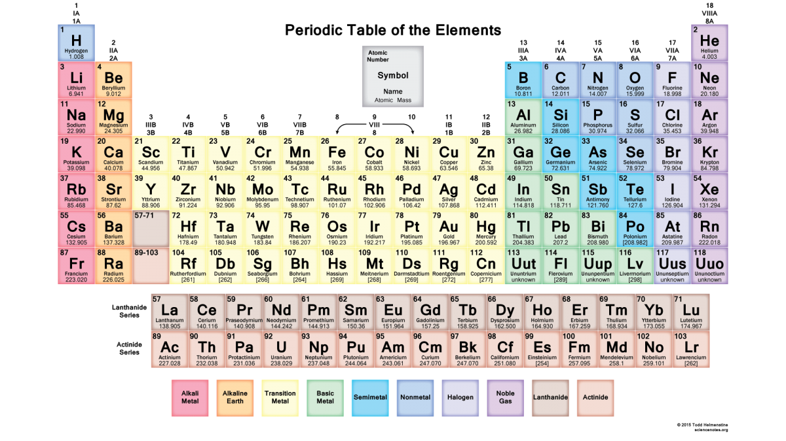

Химия
Химия — интересная и очень сложная наука. С самых первых веков своей истории люди пытались понять, из чего состоит окружающий мир, есть ли невидимые мельчайшие частицы, и как одно вещество превращается в другое. На многие вопросы сегодня найдены ответы, но есть и много неизведанного, а потому еще более интересного.
Все, что окружает нас, состоит из атомов. Химия рассказывает нам, как из атомов одних и тех же элементов образуются разные вещества, с самыми разными свойствами. Благодаря этой науке люди поняли, как самим получать различные материалы, как эффективно использовать то, что дает нам природа. Современная промышленность использует самые новые достижения химии, делая нашу жизнь удобнее, безопаснее, интереснее.
Порой химия в буквальном смысле спасает человеку жизнь. Именно благодаря исследованиям ученых был изучен химический состав организма, были найдены вещества, которые могут на него воздействовать. Лекарства, которые мы используем сегодня, получены тоже благодаря достижениям этой науки.
